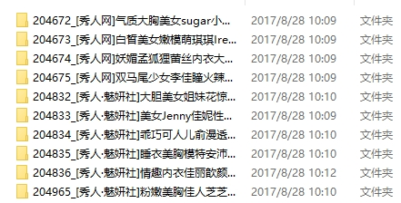
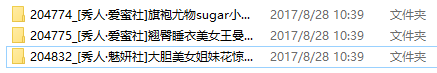

近期重构了之前Github的一个项目beauty ，项目伊始是大学期间为了学习Python及爬虫。项目通过爬虫提供了API访问55156图库-高清套图 ，让整个浏览图片的过程显得更加流畅与愉悦
项目更新
20171017: 上传代码到pypi ，提供更加便捷的使用方式
项目地址 zhongjiajie/beauty
设计理念 该项目爬虫的难度不大，但是提供了一种更加流畅与愉悦的看图方式，可以供大家参考。重构原因： 大学期间的爬虫是用了多线程直接把55156图库-高清套图 中的所有图片下载下来，已经达到了爬虫的学习目的但是只能全量抓取，不能有节制的爬取，一是容易带来资源的浪费（跑很久），二是部分的套图质量确实不敢恭维。所以重构的时候就秉持着几个原则：
提供选择下载什么分类的套图（ugirl、tuigirl等）
提供选择现在多少个最新的套图
提供先下载单张小图，然后肉眼筛选再指定下载整个套图
如何使用 clone或下载源码 从github版本库zhongjiajie/beauty 中clone或下载相应的源码
安装依赖 项目根目录运行
快速入门 tips: 以下命令均在项目根目录运行
查看Usage及支持的套图类型
Usage ： 得知项目主要有两个方法scan和download，其中scan是浏览指定种类和数量的封面图片（小图），download是下载指定种类和数量的套图（大图）。Arguments ： 目前支持的套图种类，为scan和download方法的必填项Options ： 参数的关键字及对应的解释
直接下载套图 1 2 3 4 5 6 7 8 # 下载秀人套图 默认数量为10 默认路径是./pic beauty download xiuren # 下载秀人套图 指定数量为15 beauty download xiuren -n 15 # 下载秀人套图 指定路径为D:/ beauty download xiuren -p D:/
完成后可在相应目录下看到下载结果

先浏览小图，根据个人喜好（套图质量）下载对应的大图 1 2 3 4 5 6 7 8 # 浏览秀人套图 默认数量为10 默认路径是./pic/scan beauty scan xiuren # 浏览秀人套图 指定数量为15 beauty scan xiuren -n 15 # 浏览秀人套图 指定路径为D:/scan scan方法默认的图片会下载到指定（默认目录）的scan文件夹 beauty download xiuren -p D:/
找到浏览套图文件夹scan，打开图片编辑器查看scan文件夹的图片
从上图中找到要完整下载的套图，运行下载命令
1 2 # -n参数要和scan方法的参数一样 -f参数列表内部不要留空格 beauty download xiuren -n 10 -f [204774,204775,204832]
完成后可在相应目录下看到下载结果

代码分析 命令行参数库docopt 获取命令行参数用了docopt 第三方库，docopt通过解析py文件的__doc__文档生成对应的命令行参数解析。
1 2 3 4 5 6 7 8 9 10 11 12 13 14 15 import docopt"""Usage: beauty.py scan <NAME> [-n=<num>] [-p=<path>] beauty.py download <NAME> [-n=<num>] [-f=<list>] [-p=<path>] beauty.py (--help | -h) beauty.py --version Options: --help -h Show this screen. --version Show version. --num -n=<num> Number of picture to download, [default 10]. --filter -f=<list> Filter from parameter --num album number --path -p=<path> Path to download picture, [default `$project/pic/`]. """
上面的代码会自动对命令行的输入进行解析，解析的结果会保存在一个dict类型里面，如我运行
1 beauty download tuigirl -n 10 -p ./path
docopt会自动根据__doc__已经其中的Usage解析，将获取的参数存储成Python中的一个dict
1 2 3 4 5 6 7 8 9 10 { '--filter' : None , '--help' : False , '--num' : '10' , '--path' : './path' , '--version' : False , '<NAME>' : 'tuigirl' , 'download' : True , 'scan' : False }
爬虫主程序分析 项目主要依赖于Python2.7开发环境，如果发现自己环境运行不起来，欢迎在github上提issues
爬虫程序用到的第三方库是requests ，提取html中的数据用的是re内置库
初始化输入及re.compile 创建实例的时候先对输入进行判断，根据输入执行相应的操作。同时生成多个re.compile对象，用于后期对html的匹配
1 2 3 4 5 6 7 8 9 10 11 12 13 14 15 16 17 18 19 20 21 22 23 24 25 _SMALL_PIC_TMP_REGEX = r'<div class="listBox" id="imgList">.*?</div>' _SMALL_PIC_NAME_REGEX = r'<a href="(.*?)" title="(.*?)" class="picLink"><img src="(.*?)"' _SAMLL_NEXT_PAGE_REGEX = r'<a target=\'_self\' href=\'(.*?)\'>下一页</a></li>' _BIG_PIC_REGEX = r'<img alt=".*?" src="(.*?)" />' _BIG_NEXT_PAGE_TMP_REGEX = r'<div class="pages"(.*?)</ul>' _BIG_NEXT_PAGE_REGEX = r'<a href=\'(.*?)\'' _SMALL_PIC_TMP_PATTERN = re.compile(_SMALL_PIC_TMP_REGEX, re.S) _SMALL_PIC_NAME_PATTERN = re.compile(_SMALL_PIC_NAME_REGEX) _SAMLL_NEXT_PAGE_PATTERN = re.compile(_SAMLL_NEXT_PAGE_REGEX) _BIG_PIC_PATTERN = re.compile(_BIG_PIC_REGEX) _BIG_NEXT_PAGE_TMP_PATTERN = re.compile(_BIG_NEXT_PAGE_TMP_REGEX, re.S) _BIG_NEXT_PAGE_PATTERN = re.compile(_BIG_NEXT_PAGE_REGEX) def __init__ (self, url, scan=False, download=False, filter=None, path=None, num=None) : """初始化参数及正则表达式""" self.url = url self.is_download = download self.is_scan = scan self.filter_list = eval(filter) if filter else None self.path = path if path else '{dir}/pic' . \ format(dir=os.path.dirname(os.path.dirname(os.path.abspath(__file__)))) self.num = int(num) if num else 10
获取网页response 先通过random.choice方法随机获取文件./beauty/user_agent.py文件中的UA，再通过requests.get方法获取获取网页的response，由于是整个项目获取response的方法，所以要函数的输入的URL应该定义为可变参数，并将函数设置成@staticmethod方法
1 2 3 4 5 6 7 8 9 @staticmethod def get_response (url) : """获取网页源代码""" headers = { 'User-Agent' : random.choice(agents) } response = requests.get(url, headers=headers) return response
解析response主方法 该函数主要根据用户输入解析成不同的执命令，scan和download。scan指下载封面的小图片，download下载整个套图的图片，并检查获取的数量是否大于指定的获取数量
1 2 3 4 5 6 7 8 9 10 11 12 13 14 15 16 17 18 19 20 21 22 23 24 25 26 27 28 29 30 31 32 33 34 35 36 37 def parse (self) : """Beauty主函数""" big_pic_name = [] html = self.get_response(self.url).content big_pic_name.extend(self._parse_small_pic(html)) while len(big_pic_name) < self.num: samll_next_page = self._parse_small_next_page(html) html = self.get_response(samll_next_page).content big_pic_name.extend(self._parse_small_pic(html)) pic_no_dct = {os.path.basename(i[0 ]).split('.' )[0 ]: list(i) for i in big_pic_name[:self.num]} if self.filter_list: pic_no_dct = {key: pic_no_dct[key] for key in pic_no_dct if int(key) in self.filter_list} if self.is_download: for album in pic_no_dct: big_pic_url = pic_no_dct[album][0 ] album_name = pic_no_dct[album][1 ].decode('utf8' ) html = self.get_response(big_pic_url).content for url in self._parse_big_pic(html, url=big_pic_url): pic_no_dct[album].append(url) folder = u'{album}_{name}' . \ format(album=album, name=album_name) self._download_pic(folder, pic_no_dct[album][3 :]) elif self.is_scan: scan_dct = {key: pic_no_dct[key][2 ] for key in pic_no_dct} self._scan_pic(scan_dct)
解析大小图片 解析大小图片，根据parse方法的判断分别执行相应的解析函数
1 2 3 4 5 6 7 8 9 10 11 12 13 14 15 16 17 18 19 20 21 22 23 24 25 26 27 28 29 30 31 32 33 34 35 def _parse_small_pic (self, html) : """解析小图""" mid_html = self._SMALL_PIC_TMP_PATTERN.findall(html)[0 ] pic_url_name = self._SMALL_PIC_NAME_PATTERN.findall(mid_html) return pic_url_name def _parse_small_next_page (self, html) : """解析下一页小图""" part_url = self._SAMLL_NEXT_PAGE_PATTERN.findall(html)[0 ] return self._subsite_url(part_url) def _parse_big_pic (self, html, **kwargs) : """解析大图""" for url in self._parse_big_sub(html, **kwargs): yield url def _parse_big_sub (self, html, **kwargs) : """解析大图子函数""" next_page_mid = self._BIG_NEXT_PAGE_TMP_PATTERN.findall(html)[0 ] next_page = self._BIG_NEXT_PAGE_PATTERN.findall(next_page_mid)[-1 ] yield self._BIG_PIC_PATTERN.findall(html)[0 ] while next_page != '#' : html = self.get_response(os.path.split(kwargs['url' ])[0 ] + '/' + next_page).content next_page_mid = self._BIG_NEXT_PAGE_TMP_PATTERN.findall(html)[0 ] next_page = self._BIG_NEXT_PAGE_PATTERN.findall(next_page_mid)[-1 ] yield self._BIG_PIC_PATTERN.findall(html)[0 ] def _subsite_url (self, part_url) : """返回子页面完整url""" return self.url + part_url
Star&Fork 如果你觉得有点意思或者使用起来比较方便，欢迎在github上star我的项目zhongjiajie/beauty issues 。